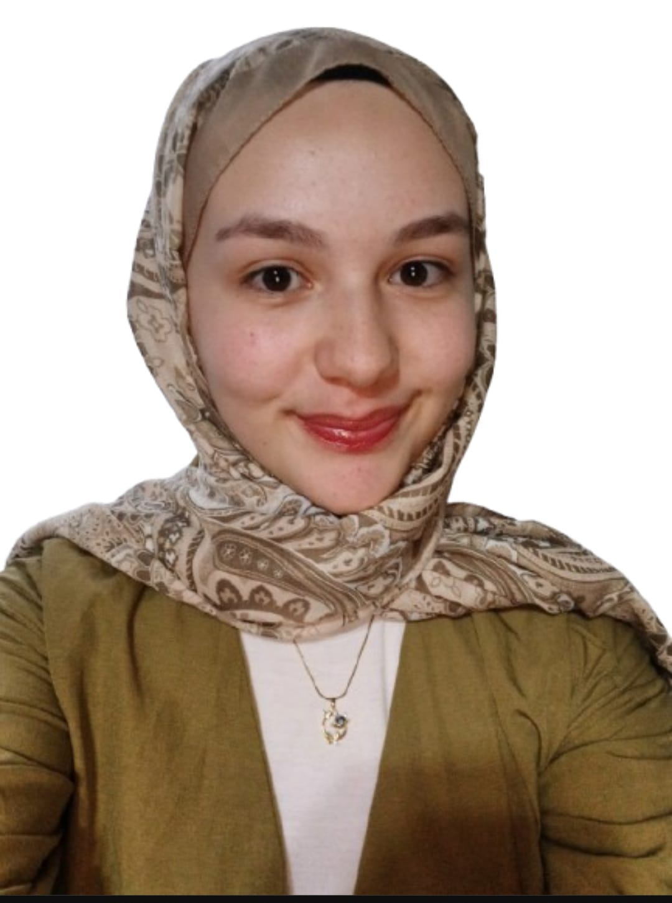
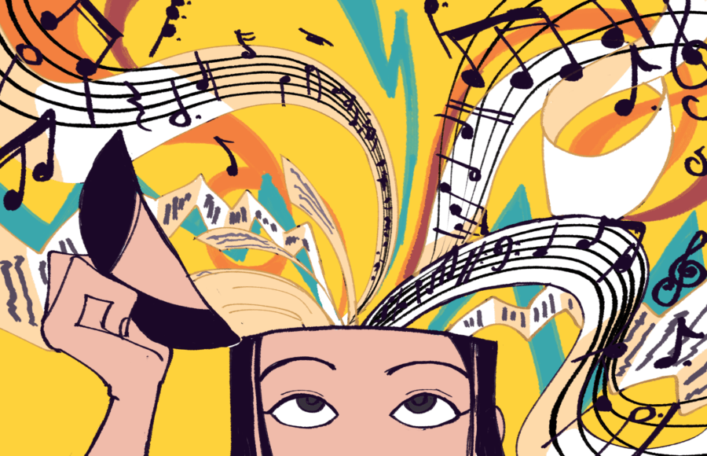

Saniye Topal
Hobilerim & İlgi Alanlarım
Merhaba, ben Saniye. 17 yaşındayım ve Sakarya Üniversitesi’nde bilgisayar mühendisliği okuyorum. Boş zamanlarımda ise hem hobilerime hem de sevdiklerime vakit ayırmayı seviyorum.
Kendi bölümümle ilgili şeylerin yanı sıra farklı alanlara da ilgim var. Yüzmek, kitap okumak, müzik dinlemek ve seyahat etmek bana en iyi gelen aktiviteler arasında.
Üniversiteyi kazandıktan sonra kod yazmanın aslında düşündüğümden daha keyifli olduğunu fark ettim. Bu da bölümüme olan ilgimi daha da artırdı.
Eskiden yağlı boya ve ebru gibi sanat dallarına amatör olarak merak salmıştım. Zamanla biraz uzaklaşmış olsam da içimdeki o ilgi hâlâ duruyor.
Genelde ilgi alanlarım dönem dönem değişse de yeni şeyler denemeyi seviyorum.
Film
